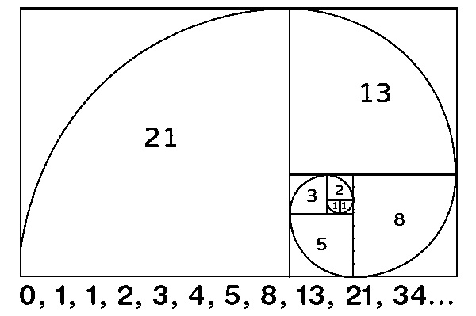

Philosophy and Spirituality
Symbolism in Western Philosophical Traditions
In Western philosophical traditions, the number 8 is often regarded as a powerful symbol representing balance, infinity, and cyclical patterns. Its shape, resembling the infinity symbol when laid horizontally, signifies endless possibilities and the continuity of life’s cycles. This connection to infinity has been a focal point in various philosophical discourses, emphasizing the perpetual nature of the universe and the eternal recurrence of all things.
The number 8 is also associated with the concept of balance and harmony. Its symmetrical structure reflects equilibrium and the duality of forces within the cosmos. Philosophers have linked this balance to the idea of maintaining harmony between the spiritual and material realms, advocating for a life that fosters both growth and achievements.
In Western numerology and mysticism, the number 8 is considered a symbol of abundance and prosperity. It is believed to inspire ambition, resilience, and the pursuit of success through dedication and hard work. This aspect underscores the number 8’s role in encouraging individuals to harness their inner strength and embrace their potential for achieving greatness.
Symbolism in Eastern Philosophies
In Eastern philosophies such as Confucianism and Taoism, the number 8 holds profound significance, symbolizing balance and harmony between the material and spiritual realms. Confucianism views the number 8 as a representation of equilibrium, encouraging individuals to maintain stability in various aspects of life and fostering a harmonious existence. This notion of balance extends to the idea that the material and spiritual worlds are interconnected, suggesting that success in one can lead to fulfillment in the other.
Taoism also places great importance on the number 8, associating it with prosperity and the smooth flow of energy, or “Qi.” This belief is reflected in the practice of feng shui, where spatial arrangements aim to harmonize individuals with their environment, often utilizing the number 8 to enhance positive energy and fortune. The Eight Immortals in Chinese mythology further underscore the spiritual depth of the number, as these figures embody control over natural forces and the balance between good and evil, life and death.
In both philosophies, the symbolism of the number 8 extends to the broader cosmos, representing the infinite cycles of life and the underlying order of the universe. This cosmic perspective emphasizes that the number 8 is not a symbol of material wealth but a guide to spiritual enlightenment and cosmic balance.
Rituals and Sacred Practices
The number 8 occupies a significant position in various rituals and sacred practices across different cultures, underpinned by diverse philosophical and spiritual beliefs. In Eastern traditions, particularly within Chinese culture, the number 8 is revered for its association with prosperity and fortune. This stems from its phonetic similarity to the word for wealth and fortune, making it a common figure in ceremonies and festivals aimed at attracting abundance.
The spiritual significance of the number 8 is also evident in its representation of balance and harmony. Its symmetrical shape mirrors the infinity symbol, signifying the continuous flow of energy and the cyclical nature of life—both crucial concepts in spiritual practices focused on achieving equilibrium between the material and spiritual realms. This symbolism is integrated into meditation practices and rituals designed to foster personal growth and inner peace.
Furthermore, the number 8 is regarded as a powerful emblem of personal strength and infinite potential. Spiritual teachings emphasize the importance of recognizing and harnessing one’s inner resilience and confidence, with the number 8 serving as a reminder of these intrinsic capabilities. This perspective is frequently incorporated into rites of passage and empowerment ceremonies, aiming to instill perseverance and self-assurance in participants.
In Western spiritual traditions, the number 8 is associated with strength, resilience, and transformation. Its frequent appearance in various contexts, such as recurring dreams or repeated encounters in daily life, is interpreted as a sign from the universe or spirit guides, prompting individuals to focus on these aspects of their lives. This belief often forms the basis for personal rituals seeking guidance and support from higher powers, reaffirming one’s path toward achieving balance and prosperity.
Thus, the integration of the number 8 into rituals and sacred practices across diverse cultures reflects its spiritual significance, rooted in philosophies of balance, prosperity, and the boundless potential of the universe.
The Number 8 in Buddhism
In Buddhism, the Eightfold Path (Pali: Atthangika-magga, Sanskrit: Astangika-marga) serves as a comprehensive guide for practitioners seeking to attain enlightenment and liberation from the cycle of rebirth. Introduced by the Buddha in his first teaching at Deer Park, the Eightfold Path is a component of the Four Noble Truths and encapsulates the Middle Way, which avoids extremes of self-indulgence and self-mortification.
The path consists of eight interrelated practices: Right View, Right Intention, Right Speech, Right Action, Right Livelihood, Right Effort, Right Mindfulness, and Right Concentration. These practices are not ethical guidelines but are designed to cultivate wisdom, ethical behavior, and mental discipline, ultimately leading to the cessation of suffering and the achievement of Nirvana. Each aspect of the path supports the others, creating a holistic approach to spiritual development.
The number 8 in this context symbolizes completeness and the interconnected nature of these practices. It serves as a reminder that enlightenment requires a balanced and comprehensive approach, addressing all aspects of life from thoughts and intentions to actions and mindfulness. Unlike teachings that emphasize prohibitions, the Noble Eightfold Path focuses on empowering individuals to cultivate positive qualities and behaviors.
The Number 8 in Hinduism
In Hinduism, the number 8 holds significant spiritual and philosophical meaning, representing a range of divine qualities and cosmic forces. The Ashta Siddhi (Eight Spiritual Powers) grant supernatural abilities, such as control over natural forces and the fulfillment of desires, aiding in spiritual mastery. The Ashta Lakshmi (Eight Forms of Goddess Lakshmi) symbolize various aspects of prosperity, from material wealth to victory, knowledge, and progeny, highlighting the interconnectedness of spiritual and material abundance. Additionally, the Ashta Dikpalas (Eight Guardians of Directions) protect the eight cardinal directions, ensuring cosmic balance and harmony. Together, these divine attributes guide spiritual development and the realization of inner peace, facilitating a harmonious balance between the material and spiritual realms. Furthermore, the concept of the Eight Vasus in Vaishnavism introduces eight celestial beings, each embodying different aspects of nature and elemental forces. Their narrative, including a mythological curse leading to their mortal birth, adds depth to their celestial characteristics.
The number 8’s symbolism extends to Hindu creation myths, where it represents the fundamental elements of the cosmos. This intricate interplay of elements guides spiritual practices and personal enlightenment within Hindu philosophy. Additionally, sacred animals and birds, associated with deities, bridge the connection between humans and the divine, reinforcing the broader spiritual significance of natural elements in Hindu thought.
Mathematics and Science
Number Theory and the Symbolic Power of 8
The number 8 holds a fundamental position in number theory due to its structural and cyclical properties. As a perfect cube (23), it signifies growth and expansion in three dimensions, making it a critical component in mathematical sequences and numerical systems. The fact that 8 is the only cube within the Fibonacci sequence, where it corresponds to the sixth Fibonacci number, further emphasizes its unique presence in recursive patterns found in mathematics and nature. [Fig. 8.17]
The divisibility and symmetry of 8 also contribute to its significance. As an even number, 8 is divisible by 1, 2, and 4, which makes it a highly stable and structured number. In modular arithmetic, 8 serves as a key example of cyclicity, especially in periodic functions and number sequences. The cyclical nature of 8, where it resets after every eighth step, aligns with its symbolism of infinity and repetition, a concept that is also reflected in higher-dimensional mathematical studies and fractal theory.
Algebra and the Structural Meaning of 8
In algebra, the number 8 appears in various mathematical groups and abstract structures, particularly in group theory, a branch of algebra concerned with symmetries and transformations. One of the notable algebraic structures involving 8 is the dihedral group 8D, which represents the symmetries of an octagon, illustrating how 8 serves as a representation of rotational and reflective balance.
Beyond finite groups, 8 is also present in higher algebraic structures, such as the octonions, an eight-dimensional extension of complex numbers and quaternions. The octonions play a critical role in modern mathematical physics, particularly in string theory, quantum mechanics, and relativity, where multiple dimensions define fundamental interactions in the universe. These mathematical constructs reinforce the abstract and structural importance of 8 in modeling complex systems.
The associative properties of 8 in algebra also align with its symbolic connection to balance and equilibrium. It frequently appears in equations related to symmetric polynomials, matrix operations, and algebraic invariants, all of which contribute to mathematical consistency and coherence across different fields.
Geometry and the Spatial Significance of 8
Geometry provides a clear visualization of the symbolic properties of 8, particularly in its connection to octagons, three-dimensional solids, and higher-dimensional spaces. The regular octagon, a polygon with eight equal sides and angles, embodies balance, symmetry, and structural stability. Its appearance in architecture and design is a testament to its ability to distribute forces evenly, a principle frequently used in engineering and construction.
In solid geometry, the octahedron, one of the five Platonic solids, is composed of eight equilateral triangular faces. This shape appears naturally in crystal lattices, molecular structures, and tessellations, further reinforcing the symbolic association of 8 with order and efficiency. The octahedral configuration is also essential in chemical bonding and molecular physics, where it describes the spatial arrangement of atoms in coordination complexes.
Higher-dimensional mathematics also uses 8-dimensional spaces in advanced topics such as tessellations, topology, and theoretical physics. The E₈ lattice, a mathematical structure used in string theory and Lie algebra, is based on an eight-dimensional space, making it one of the most symmetrical and mathematically elegant structures in modern physics. This further emphasizes the connection between 8 and cosmic order, symmetry, and the fundamental architecture of space-time.
Numerical Systems and the Role of 8 in Computing
The number 8 is integral to computing and digital systems, particularly in its role within numeral systems. In the binary system (base-2), numbers are expressed in terms of powers of 2, making 8 a crucial threshold due to its relation to bit representation and data storage.
The octal system (base-8) provides a more compact way of representing binary numbers, where each digit corresponds to three binary digits. This simplifies conversions between binary and octal, making computations more efficient, especially in early computing systems.
In modern computing, data is structured around 8-bit groupings, known as bytes. A byte forms the fundamental unit in memory addressing, data storage, and programming languages. The use of 8-bit structures in ASCII encoding, Unicode, and network protocols reinforces the role of 8 as a fundamental component of information processing and digital communication.
Historically, octal was widely used in early digital machines before hexadecimal (base-16) became the preferred system. However, octal remains relevant in specific applications, such as file permissions in UNIX-based systems, memory allocation, and embedded systems, where efficient binary representation is essential.
Chemistry and the Atomic Symbolism of 8
In chemistry, the number 8 is of particular significance due to its association with oxygen, an element with atomic number 8. Oxygen is one of the most abundant and highly reactive elements, playing a central role in combustion, respiration, and oxidation-reduction reactions, essential to life processes.
The octet rule, a fundamental concept in chemical bonding, states that atoms tend to gain, lose, or share electrons to achieve a stable configuration of eight valence electrons. This principle explains the stability of noble gases and the formation of ionic and covalent compounds. The prevalence of the octet rule in molecular chemistry demonstrates how 8 is associated with completeness and equilibrium in atomic structures.
Many common chemical compounds exhibit octahedral geometry, where atoms are arranged symmetrically around a central atom. Transition metal complexes, molecular crystals, and coordination compounds adopt this structure, further reinforcing the geometric and spatial importance of 8 in chemistry.
Biology and the Life-Sustaining Role of 8
The biological significance of 8 is deeply connected to oxygen, which is essential for cellular respiration and metabolic processes. Oxygen serves as the final electron acceptor in the electron transport chain, allowing cells to produce ATP efficiently. This makes oxygen fundamental to energy metabolism and survival in aerobic organisms.
The structural organization of biological molecules also follows patterns based on 8. Many proteins and enzymes exhibit octameric symmetry, where subunits arrange themselves in groups of eight to maintain structural stability and function. Hemoglobin, the oxygen-carrying protein in blood, contains four polypeptide chains, each binding to an oxygen molecule, reinforcing the numerical significance of oxygen and the number 8 in biological life.
Additionally, the eightfold symmetry found in certain organisms, such as jellyfish and starfish, demonstrates how 8 appears naturally in evolutionary adaptations.51 Radial symmetry in echinoderms, cnidarians, and certain plant structures reflects the efficiency of octameric arrangements in biological systems.
Cultural Symbolism
Significance of 8 in Chinese Traditions and Beliefs
In Chinese culture, the number 8 holds profound significance and is revered as the luckiest number. This stems primarily from its pronunciation in Mandarin, “ba,” which sounds similar to the word for “wealth” or “fortune” (fa). As a result, it is commonly associated with prosperity, success, and good fortune.
The number 8 is often chosen for its auspicious implications when selecting important items such as wedding dates, house numbers, license plates, and telephone numbers. License plates containing the number 8 are highly sought after and can fetch exorbitant prices due to their perceived ability to bring financial success. For instance, in 2016, a license plate featuring five number 8s was sold for over 18 million Hong Kong dollars.
Beyond material wealth, the number 8 is believed to bring positive energy and good fortune to various aspects of life. This deep-rooted belief makes it a favored choice in many traditional and modern contexts. The symbolism extends to personal traits as well, where individuals associated with the number 8 are thought to possess strong leadership qualities and an excellent temperament. However, their ambition can sometimes lead to arrogance and an inflated sense of self-worth.
Understanding the cultural importance of the number 8 provides valuable insight into Chinese customs and traditions, reflecting a broader respect for numerology that influences daily life, festivals, and business practices.
The Eight Auspicious Signs in Buddhism
In Buddhism, the Eight Auspicious Signs, also known as Ashtamangala, are deeply symbolic and hold significant cultural importance. These symbols originally represented offerings made to Buddha by Hindu deities upon his enlightenment and have since evolved to represent various stages of a person’s material and spiritual well-being.
The Eight Auspicious Signs include the Precious Parasol, the White Conch Shell, the Two Golden Fish, the Eternal Knot, the Treasure Vase, the Victory Banner, the Lotus Flower, and the Dharma Wheel. Each symbol carries distinct meanings and teachings.
The Precious Parasol signifies protection from harmful forces and obstacles, much like a parasol protects from the sun’s heat. The White Conch Shell, which coils to the right, represents the far-reaching sound of the Dharma, awakening beings from ignorance. The Two Golden Fish symbolize freedom and liberation, much like fish swimming freely in water. The Eternal Knot is indicative of the interconnectedness of all phenomena and the union of wisdom and compassion. The Treasure Vase represents an endless rain of long life, wealth, and prosperity. The Victory Banner symbolizes the Buddha’s triumph over Mara, the personification of obstacles on the path to enlightenment. The Lotus Flower stands for purity and spiritual unfoldment, growing unstained from the mud. Lastly, the Dharma Wheel, or Dharmachakra, represents the Buddha’s teachings and the spread of Dharma across the world.
In Tibetan Buddhism, these symbols are ubiquitous, adorning temples, ritual items, and artwork to invoke positive energy and good fortune. They are also used in ceremonies and significant events, reflecting their integral role in Buddhist practice and cultural expression.
Symbolism of Number 8 in Hinduism
In Hinduism, the number eight holds symbolic significance across various texts, rituals, and deities. It represents specific groups and elements within the universe, as described in the Upanishads, and is associated with several key deities and spiritual concepts.
One of the principal associations of the number 8 in Hinduism is with Lord Krishna, considered the eighth incarnation of Lord Vishnu. The number 8 appears repeatedly in his life and mythology. Krishna was the eighth son of Devaki and Vasudeva, and he was born on the eighth day (Ashtami) of the Krishna Paksha. Additionally, he is known to have had eight primary wives, collectively referred to as Ashtabharya, further solidifying the significance of the number 8 in his story.
Lord Shiva, a major deity in Hinduism, is also intricately linked with the number 8. Shiva is often worshipped in the form of Ashta Murthy, which translates to “eightfold form.” The Tamil Nadu region is home to eight shrines known as Ashta Veerattanams, each commemorating one of Shiva’s heroic deeds. Furthermore, the Saivite saint Appar of the seventh century AD mentioned that Shiva enjoys Puja performed with eight types of flowers, symbolizing eight good qualities.
In Hindu cosmology and texts, the number eight is also symbolic. For instance, the Vishnu Purana emphasizes the importance of hospitality, which involves specific duties organized around the number eight. The classical elements forming the physical body and the spiritual yearning for Vrindavana, an important locale in Krishna’s life, are also represented by the number eight.
Moreover, in the context of marital compatibility, traditional Hindu practices use the number eight as a foundational parameter. Compatibility between prospective spouses is assessed across eight key criteria, which together contribute to the overall evaluation.
The Ashtamangala in Hinduism
The Ashtamangala, a sacred set of eight auspicious symbols, holds significance across several Indian religions, including Hinduism. These symbols are used in various spiritual and religious contexts as teaching tools and representations of enlightened qualities.
Through these various associations and representations, the number eight is deeply embedded in Hindu cultural and spiritual traditions, symbolizing balance, completeness, and the infinite potential of the universe.
The Symbolism of Ashta Lakshmi
In Hindu traditions, the number 8 holds significant symbolic meaning through the representation of Ashta Lakshmi, the eight divine forms of the Goddess Lakshmi. Lakshmi, the consort of Lord Vishnu, is venerated as the Goddess of wealth, prosperity, and abundance. She embodies not only material wealth but also spiritual and emotional well-being, making her an integral figure in Hinduism.
Ashta Lakshmi, translating to “Eight Lakshmis,” highlights the multifaceted nature of prosperity, with each form embodying a distinct aspect of wealth and well-being. This collective representation underscores the comprehensive nature of abundance in life, encompassing various types of prosperity that go beyond mere financial wealth.
The Star of Lakshmi, an ancient Hindu symbol, encapsulates the essence of Ashta Lakshmi through its eight-pointed structure. Each point signifies a distinct facet of well-being, embodying balance, harmony, and cosmic order. This geometric design serves as a powerful meditation focal point and plays a crucial role in rituals aimed at enhancing both spiritual and material prosperity.
In essence, the Ashta Lakshmi concept and the Star of Lakshmi emphasize the holistic nature of abundance, integrating material, spiritual, and emotional prosperity into a harmonious whole. This representation of the number 8 in Hindu culture highlights the importance of achieving a balanced and fulfilling life, resonating deeply with the principles of interconnectedness and holistic well-being.
The Significance of 8 in Western Traditions
In Western culture, the number 8 has been endowed with significance and symbolism across various traditions and periods. The ancient Greeks considered the number eight to be an all-powerful number, encapsulated in their saying “all things are eight.” The Pythagoreans associated the number with the goddess Venus and believed it symbolized harmony, friendship, sympathy, and love among living creatures. This reverence is echoed in religious contexts; in Christianity, the number eight signifies new beginnings and resurrection, symbolizing a fresh start and spiritual rebirth.
The Egyptians also regarded the number eight as the most magical of numbers, representing balance and cosmic order. This symbolism was deeply rooted in their theology, particularly through the Ogdoad, a group of eight primordial deities associated with the creation and order of the universe. These deities embodied fundamental cosmic forces, such as infinity, chaos, and darkness, and their complementary nature symbolized the balance required to create and sustain the cosmos. Additionally, their sacred rituals involved eight significant sites forming a cyclical ritual, aiming to uncover the elixir of life, thereby intertwining the number with themes of immortality and eternal balance.
Astrology and Tarot
The Number 8 in Astrology
The number 8 holds significance in both numerology and astrology, embodying a blend of spiritual and material attributes. It is closely associated with the planet Saturn, a celestial body linked to themes of discipline, responsibility, and karmic lessons. In astrology, this connection with Saturn teaches patience, structure, and an understanding of the consequences of our actions, mirroring the planet’s influence in a natal chart.
Historically, the number 8 has been revered for its symbolic importance. In ancient Mesopotamia, it represented infinity and cosmic order, while in Egyptian mythology, it symbolized balance and harmony. Numerologically, the number 8 is connected to cycles, infinity, balance, success, and opportunity, reflecting attributes such as authority, self-confidence, inner strength, and social status.
Individuals influenced by the number 8—particularly those born on the 8th, 17th, or 26th of any month—are often seen as ambitious, determined, and resilient, driven by a strong sense of purpose.81 The number 8 also appears prominently in tarot, where it is associated with The Strength card, which emphasizes themes of domination, control, and the mastery of both inner and outer challenges.
In astrology, the appearance of the number 8 in an individual’s chart signifies a unique cosmic alignment, often heralding periods of transformation and urging the individual to embrace change while navigating life’s challenges with grace. This alignment underscores the number’s deep spiritual and astrological significance, weaving its magic through the tapestry of the universe.
Saturn’s Influence on the Number 8
In astrology, the number 8 is not merely a numerical figure but a cosmic force with profound significance. Represented by the symbol of infinity, it signifies eternal cycles, balance, and cosmic harmony. Its influence is deeply intertwined with Saturn, the planet that governs discipline, hard work, and karma.
Individuals with a number 8 in their astrological charts often experience a unique cosmic alignment, one that can usher in significant transformation. This alignment challenges them to embrace change and navigate life’s trials with resilience and grace. The vibration of the number 8 resonates with Saturn’s energies, teaching these individuals about patience, structure, and the consequences of their actions.
Astrologically, those influenced by the number 8 are seen as ambitious, strong, and reliable. They possess a natural affinity for leadership roles and have a knack for making practical decisions. These traits enable them to handle challenges with responsibility and perseverance. The number 8’s influence extends beyond the material realm, encouraging spiritual growth and self-discovery. This makes these individuals more adept at balancing their worldly ambitions with their spiritual aspirations.
The Number 8 in Tarot
In tarot, the number 8 is represented by The Strength card, one of the Major Arcana. This card embodies themes of inner strength, courage, compassion, and resilience. Unlike traditional notions of strength associated with physical power, The Strength card emphasizes the importance of emotional fortitude and the power of gentle influence over brute force. The card often depicts a woman calmly taming a lion, symbolizing the harmony between inner strength and the outward expression of patience and self-control.
Drawing the Strength card in a tarot reading can indicate that the querent is being called to harness their inner resources to overcome challenges. This card often appears during times of personal struggle, urging individuals to face their fears with courage, practice compassion in their relationships, and exercise patience and self-control in navigating difficulties. The Strength card serves as a reminder that true power lies within, and resilience is born from inner calm and understanding rather than aggression.
In love and relationships, The Strength card suggests that patience and understanding are key to overcoming obstacles, leading to successful outcomes. It encourages open communication and mutual trust, highlighting the importance of nurturing connections with compassion and vulnerability. Similarly, in career and personal growth, the card’s energy can inspire individuals to persevere through challenges, maintain confidence, and cultivate a resilient mindset for long-term success.
The number 8 in the Minor Arcana of the tarot deck carries significant symbolism, blending stability with the potential for growth and transformation. The eights represent a point where the stability of the number 4 is amplified, shedding walls to reach towards a higher state while still operating within established rules. This stage indicates a readiness to transcend current boundaries, leveraging the lessons from previous numbers to strive for improvement.
Within tarot readings, the number 8 is closely associated with internal strength and resilience. It encourages individuals to confront challenges with courage and balance, emphasizing the need for harmonious relationships and emotional stability. The number 8 also has a strong karmic connection, reminding us that our actions have significant consequences that shape our future outcomes. The cyclic nature of life, represented by the infinity symbol, is a recurring theme with the number 8, indicating the ongoing cycles of energy and the continuous journey towards self-discovery and personal growth.
The number 8 in the tarot deck also embodies the dual aspects of building and destruction, but in a mental and intellectual manner. This reflects the idea of internal progress, where old ways are reassessed, and new strategies are devised for higher achievements. The Eight of Swords reflects mental confinement and the need to break free from limiting thoughts, while the Eight of Cups speaks to emotional growth and the process of letting go of unfulfilling situations. The Eight of Pentacles represents dedication and the pursuit of mastery, underscoring the value of hard work in achieving long-term goals, and the Eight of Wands indicates rapid movement and the manifestation of long-awaited goals.
The concept of balance extends to the idea of harmony between the earthly and spiritual realms, underscoring the importance of discipline and responsibility. Thus, in the Minor Arcana, the number 8 stands as a powerful symbol of both internal and external strength, and the perpetual quest for balance, transformation, and enlightenment.

[Fig. 8.17]
The Fibonacci sequence, where each number is the sum of the two preceding ones. The number 8 is the only perfect cube within the sequence, corresponding to the sixth Fibonacci number.
8